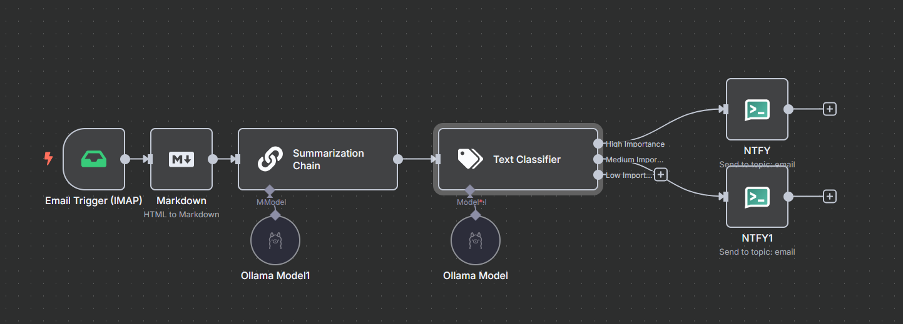

Hey folks,
This is a quick blog post on using N8N and local large language models to automate email notifications based on priority. The main reason behind this was to combat notification fatigue. Like many of you, I receive tonnes of emails daily and honestly about 90% of them are not worth the immediate attention they often demand.
Why Tackle Notification Fatigue?
Notification fatigue can dull our response to notifications, causing us to miss out on truly important messages. To avoid this, I decided to automate the process of sorting through emails by priority, ensuring that I only deal with what really matters when it truly matters.
How I Set It Up
Using N8N
The heart of this setup involves using N8N, an open-source workflow automation tool. Here’s how I configured it:
Email as Trigger: Using the SMTP connector as a trigger. This step activates whenever an email is received.
Markdown Conversion: The emails are first converted to markdown. This helps in simplifying the text, making it easier for our local language model to process it.
Summarization: We don’t use this in the categorization but we do use it later for our notification text.
Categoriser: The next step is a text categoriser with the instructions to basically categorise the email into one of three, so high, medium or low priority and in the prompt for that, I’ve given it some instructions, so a high-priority email is really critical to me, and i’m going to need to get them straight away. A medium priority, I should read it, but if I reply to it in the next week or so, then that’s fine. And the low priority is newsletters and stuff like that, not something for the junk filter but maybe I will read it at some point.
Depending on the category assigned by the model, the importance level of the follow-up notification in NTFY varies considerably.
N8N Flow

Notification Through NTFY
- High priority: Triggers an emergency mode alert on my phone.
- Low priority: No audible notification, silently logs for later reference.
Why Local Models?
One of my significant concerns was privacy and data security. By using local language models, I ensure that sensitive email data does not leave my server. Local models also allow me to use some tiny models that are pretty fast at doing this and with no cost other than power consumption.
Challenges and Solutions
One of the challenges is I could not get it to output proper JSON, what it was doing is
1
{"Medium Importance": true}
And actually what I wanted to do is
1
{"High Importance": false, "Medium Importance": true, "Low Importance": false}
So changing the model to gemma3:1b worked a little bit, but it still wasn’t perfect.
The Auto-Fixingfeature in N8N allows it to basically check if the JSON is correctly formatted and if it’s not, it just reruns the inference again. And if you do that a couple of times, hopefully it gets it right, but sometimes it still wasn’t. So then changing the instructions was finally, what did it, so this is my prompt to do that
Please classify the text provided by the user into one of the following categories: {categories}, Output your classification as JSON with true or false values for each category. Your response should strictly follow this format without additional explanations:
And this seems to work pretty much all the time, I’ve not seen it fail on that since, but I also changed the model so that I did do it.
Results and Further Optimizations
This is a bit of a proof of concept really. What I’m using, I’m using Purelymail for the mail hosting, and they can allow me to point a domain at it as a catch all then the notification process will run.
in the future we could add filters, so we only want to run this process on test@domain but we don’t want to run it at test2@domain, or whatever extra rules we want to add, so there’s more opportunities for cooler automations that maybe filter out newsletters by the email or something.
Conclusion
This setup not only saves time but also ensures that I’m not overwhelmed by the volume of less important emails.
I’m looking forward to refining this system further and exploring more sophisticated automations — maybe even incorporating filters based on specific email sender behaviors.
Happy automating,